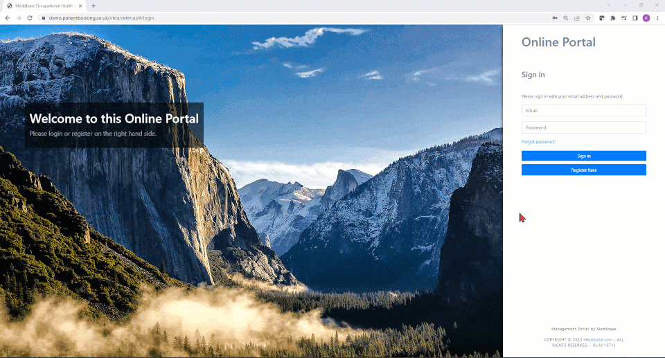
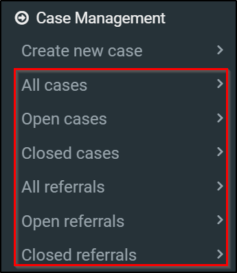
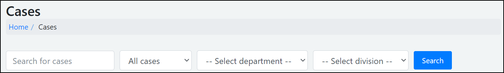
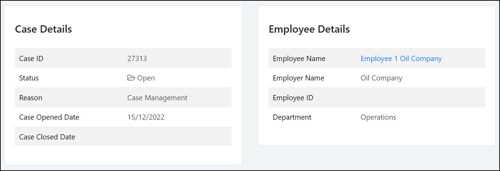
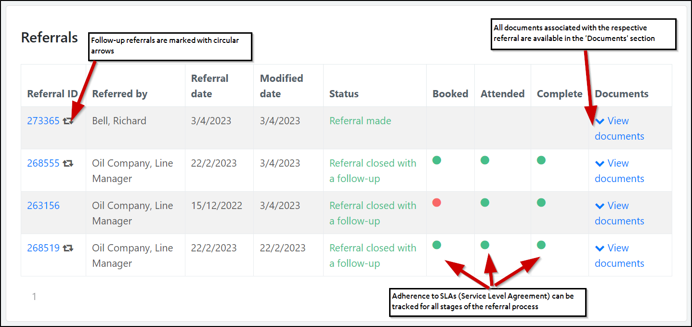
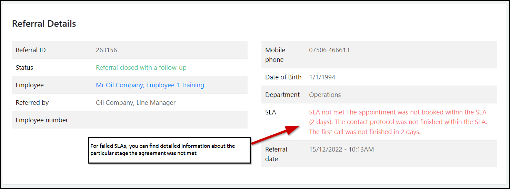
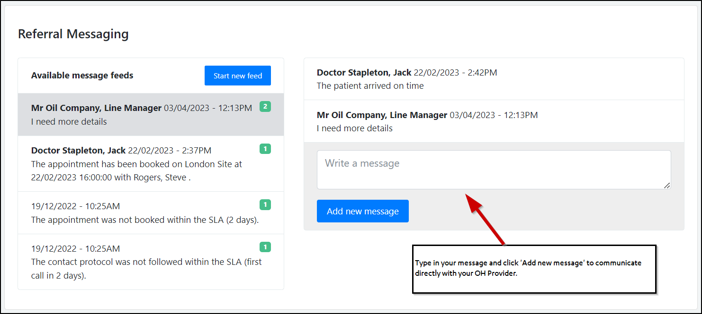
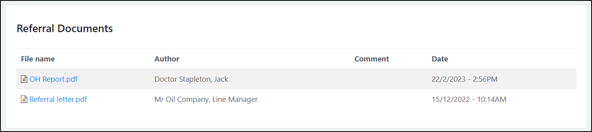
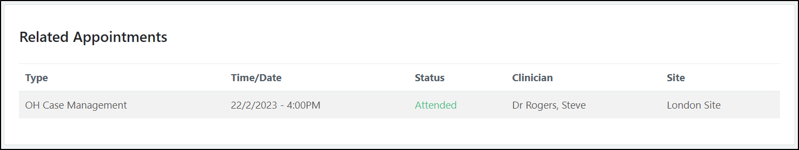
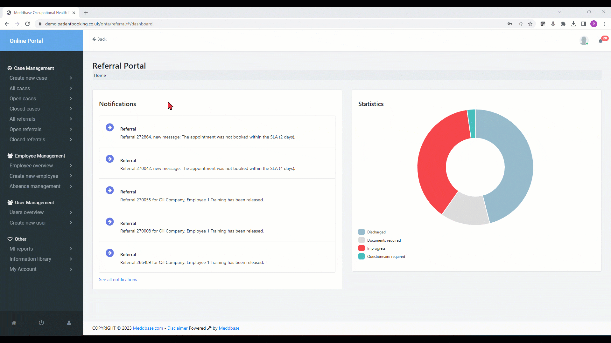

Occupational Health providers using the Meddbase application allow employers to use the Occupational Health Portal.
The target audience for this article are Line Managers and/or HR professionals working within these companies.
The secure Occupational Health portal gives you the ability to make referrals, send Pre-Placement Questionnaires, make direct bookings, and view reporting data.
Communication between the OH Portal and your OH Provider’s EMR system is powered by a secure set of APIs, which means data never has to leave the OH Provider’s system environment.
This article describes:
Your OH Provider can supply you with an Invite Code that you (and other managers) can use to self-register on the Occupational Health Portal login page:
Once the code is confirmed, your account will be created, and you will be able to log into the OH Portal Dashboard.

Once you gained access to the Occupational Health Portal dashboard, you can utilise the Case Management functionality
Case management is an intuitive and straight forward process that allows you to create and track cases from the portal dashboard:
A referral letter is automatically generated and attached to the referral which will now be sent to your OH provider’s EMR system along with the aforementioned documents.
Your OH Provider may also enable direct bookings through the portal. This workflow also involves creating a case.
![[Full alt text]](images/Making%20a%20direct%20booking%20via%20the%20OH%20Portal.gif)
After you created a case, made a referral or booked an appointment for your employee, you can track the progress.
You can view:

You can also search for a specific case number or narrow down the list to a specific employee department and division.

Click on a specific case to view its details.

This includes any referrals assigned to this case. You can view the referral details, its current status and track adherence to SLAs, that is, whether the appointment was booked, attended and whether the OH report was completed according to the SLA.
A stage completed successfully will be marked with a green dot. A stage where an SLA was failed, will be marked with a red dot.
You can also view any documents attached to the referral, including the auto-generated referral letter.

If you wish to know more about a referral assigned to a case, click the referral number.
This allows you to view the referral details, including status and SLA details.

Furthermore, a referral messaging section allows direct messaging with your OH Provider.

Next, any documents associated with this referral are listed in the documents section.

Lastly, you can view the appointments related to this referral.

And here are all these steps combined.
Your OH Provider may enable an option for you to Close cases that are currently open, as long as no future appointment bookings exist for this case.
Navigate to a particular open case and click Close Case. Click Yes to confirm your choice.
Furthermore, you can re-Open cases that are currently closed.
Navigate to a particular closed case and click Open Case. Click Yes to confirm your choice.
Whether a case is Open or Closed you can always click Request follow-up, which results in a follow-up referral being sent to your OH Provider’s EMR system. State the reason for the follow up and confirm by clicking Yes, Request.
The follow up referral will now be added to the case, marked with circular arrows.

Provided you have the right permissions set by your OH Provider, you can reallocate a referral and the case it belongs to a different manager. This is useful when a manger leaves the business or is otherwise unavailable.
Navigate to a case or to a referral directly and click Allocate case. Search for a different manager using their employee number and click Allocate case.
Your OH Provider will be notified of the change.